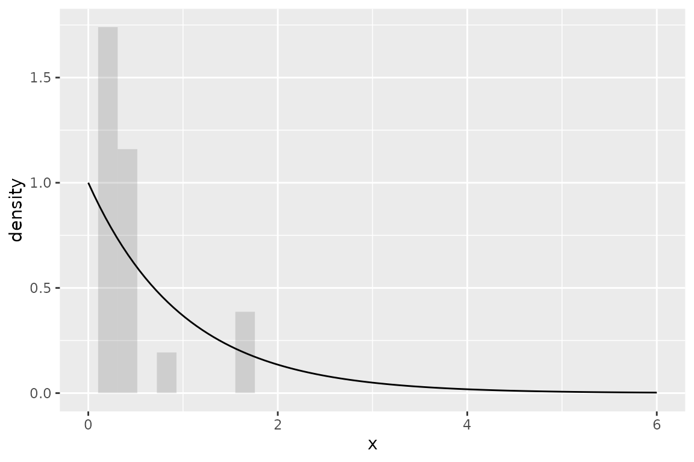

Introduction
To demonstrate the R package algebraic.mle, we consider
the relatively simple case of a random sample from i.i.d. exponentially
distributed random variables. We show how to generate a sample, how to
estimate the rate parameter of the exponential distribution, and how to
compute the performance measures of the MLE. We also show how to compute
the sampling distribution of the MLE.
First, we load the R package algebraic.mle, along with
other R packages we need, with:
DGP and generating samples
We consider the exponential distribution with rate parameter \(\lambda\). The exponential distribution has pdf given by \(f(x) = \lambda \exp(-\lambda x)\) for \(x \geq 0\) and \(f(x) = 0\) otherwise. The exponential distribution is unimodal and has a single parameter, \(\lambda\), which is the rate parameter. The exponential distribution is a continuous distribution.
We have control of the rate parameter \(\lambda\) in the DGP (data generating process). In the following R code, we specity the DGP parameters for the exponential distribution:
n <- 50
rate <- 3This denotes that we have a sample of size \(n=50\) from an exponential distribution with rate parameter \(\lambda=3\). We set the seed for the random number generator with:
set.seed(42)We generate a random sample \(X_i \sim \operatorname{EXP}(\lambda=3)\) for \(i=1,\ldots,n\) with the following R code:
We have observed a sample of size \(n=50\) from an exponential distribution with rate parameter \(\lambda=3\). We show some observations from this sample (data frame) with:
print(head(x,n=4))
#> # A tibble: 4 × 1
#> x
#> <dbl>
#> 1 0.0661
#> 2 0.220
#> 3 0.0945
#> 4 0.0127The pdf of the exponential distribution is given by \[ f(x;\lambda) = \lambda \exp(-\lambda x) \] for \(x \geq 0\) and \(f(x;\lambda) = 0\) otherwise. We show a histogram of the sample overlaid with a plot of the exponential function’s pdf, with the following R code:
ggplot(x, aes(x=x)) + geom_histogram(aes(y=..density..),alpha=.2) +
xlim(0,6) +
geom_function(fun=dexp)
Next, we show how to estimate the rate parameter \(\lambda\) of the exponential distribution.
Maximum likelihood estimation
The MLE is the value of \(\lambda\) that maximizes the likelihood function \[ L(\lambda) = \prod_{i=1}^n f(x_i;\lambda). \] We normally work with the log-likelihood function instead of the likelihood function. Since the log-likelihood function is a monotone increasing function, the MLE is the value of \(\lambda\) that maximizes the log-likelihood function, \[ \ell(\lambda) = \sum_{i=1}^n \log f(x_i;\lambda) = \sum_{i=1}^n \log \lambda - \lambda x_i. \]
To find the value that maximizes \(\ell\), we take the derivative of \(\ell\) with respect to \(\lambda\) and set it equal to zero. We obtain the following equation: \[ \frac{1}{\lambda} \sum_{i=1}^n x_i = n. \] This equation has a unique solution, which is the MLE of the rate parameter \(\lambda\) of the exponential distribution. Thus, the MLE of the rate parameter \(\lambda\) of the exponential distribution is given by \[ \hat\lambda = \frac{1}{n} \sum_{i=1}^n x_i. \]
The algebraic.mle package provides a function
mle_exp_rate that computes the MLE of the rate parameter
\(\lambda\) of the exponential
distribution. Since mle_exp_rate returns an
mle object, we can use various methods and functions on it,
like the summary function, to help us understand the MLE
point estimate and its sampling distribution.
We can compute the MLE of the rate parameter \(\lambda\) of the exponential distribution with:
rate.hat <- mle_exp_rate(x$x)
summary(rate.hat)
#> Maximum likelihood estimator of type mle_exp_rate is normally distributed.
#> The estimates of the parameters are given by:
#> rate
#> 2.642537
#> The fisher information matrix (FIM) is given by:
#> rate
#> 7.160243
#> The variance-covariance matrix of the estimator is given by:
#> rate
#> 0.1396601
#> The asymptotic 95% confidence interval of the parameters are given by:
#> 2.5% 97.5%
#> rate 2.027837 3.257237
#> The bias of the estimator is given by:
#> bias(rate)
#> 0.05392933
#> The MSE of the estimator is 0.002908373 .
#> The log-likelihood is -1.413024 .
#> The AIC is 4.826049 .
#> The standard error is 0.3737112 .The ML point estimate of the rate parameter \(\lambda\) of the exponential distribution
is \(\hat\lambda=2.6425372\), which may
be computed with the point function:
point(rate.hat)
#> rate
#> 2.642537In the next section, we show how to estimate the sampling distribution of the MLE \(\hat\lambda\). We also show how to compute the performance measures of the MLE.
Sampling distribution of the MLE
In general, to estimate the sampling distribution, we generate \(B=10000\) samples (of size \(50\)) and their corresponding estimators, \(\hat\theta^{(1)},\ldots,\hat\theta^{(B)}\).
Normally, we do not have \(B\) samples, and if we did, we would gather all \(B\) samples into one sample (or used a weighted MLE), which would contain more (Fisher) information about \(\theta\).
However, a nice property of MLEs is that, asymptotically, they converge to a normal distribution with a mean given by the true parameter, in this case \(\lambda\), and a variance-covariance given by the inverse of the Fisher information matrix \(I\), in this case \(I(\lambda) = n/\lambda^2\), i.e., \(\hat\lambda \sim N(\lambda,I^{-1}(\lambda))\).
We observe the empirical sampling distribution of \(\hat\theta\) overlaid with the theoretical asymptotic distribution with:
B <- 1000
data0 <- numeric(length=B)
for (i in 1:B)
{
x <- stats::rexp(n,rate)
data0[i] <- point(mle_exp_rate(x))
}
ggplot(tibble(rate.hat=data0), aes(x=rate.hat)) +
geom_histogram(aes(y=after_stat(density)),alpha=.3,bins=50) +
geom_function(fun=function(x) { dnorm(x,mean=rate,sd=rate/sqrt(n)) })
We do not know \(\lambda\), but we may estimate it from a sample, and thus we may approximate the sampling distribution of \(\hat\lambda\) with \(N(\hat\lambda,I^{-1}(\hat\lambda))\).
We can compute the Fisher information and variance-covariance matrices with:
NOTE: If
rate.hathad been a vector,vcovwould have returned a matrix of variances and covariances, with the variances on the diagonal. (We may consider the above \(1 \times 1\) matrices.)
Since we are only giving one sample, we cannot do as we did before to provide \(B\) estimates of \(\lambda\). However, we can sample from the approximation of the asymptotic distribution of \(\hat\lambda\) with:
data1 <- sampler(rate.hat)(B)We visually compare the two MLE samples, data0 and
data1, with:
data <- data.frame(values=c(data0,data1), group=c(rep("empirical",B),rep("approximation",B)))
ggplot(data,aes(x=values,fill=group)) +
geom_histogram(aes(y=..density..),position="identity", alpha=0.2, bins=50)
Due to sampling error, we see that the approximation, the estimate of the asymptotic sampling distribution \(N(\hat\lambda,\hat\lambda/n^{1/2})\), is shifted to the left of the sample from the true distribution, but they appear to be quite similar otherwise.
Performance measures of the MLE
We can show the confidence interval with:
confint(rate.hat)
#> 2.5% 97.5%
#> rate 2.027837 3.257237The smaller the confidence interval, the better the estimator.
The bias \(b(\hat\lambda,\lambda) = E(\hat\lambda) - \lambda\) is another way of measuring the performance of an estimator. Ideally, the bias is zero for all components being estimated. In the MLE, the bias is asymptotically zero, but for small samples may be quite biased.
For the exponential distribution’s rate parameter, the MLE is biased. Here’s R code to compute an estimate of the bias of \(\hat\lambda\) and and the true bias of \(\hat\lambda\):
In this, they are similar.
The mean squared error (MSE) is another performance measure of an estimator. It is given by \[ \operatorname{mse}(\hat\lambda) = E\bigl\{(\hat\lambda - \lambda)^2)\bigr\}, \] which is not the same as the variance \[ \operatorname{var}(\hat\lambda) = E\bigl\{(\hat\lambda - E(\hat\lambda))^2)\bigr\}, \] since the variance only accounts for the estimators spread around its central tendency (which may be biased). Another way to compute the MSE is given by \[ \operatorname{mse}(\hat\lambda) = \operatorname{var}(\hat\lambda) + \operatorname{bias}(\hat\lambda,\lambda)^2. \] We may, of course, have to estimate the MSE if the \(\lambda\) is not known by replacing the bias with an estimate of the bias, as discussed previously.
Here’s R code to compute the MSE of \(\hat\lambda\), an estimate of the MSE and the true MSE:
They are quite similar in this case.
Invariance property of the MLE
An interesting property of an MLE \(\hat\lambda\) is that the MLE of \(f(\lambda)\) is given by \(f(\hat\lambda)\).
Linear transformations
If \(\hat\theta\) is a MLE vector and the large sample approximation holds, then \(\hat\theta\) can be treated as an asymptotically multivariate normal with mean vector equal \(\theta\) and variance-covariance given by the inverse of the Fisher Information Matrix \(I(\theta)^{-1}\), i.e., \[ \theta \sim \operatorname{MVN}(\theta, I(\theta)^{-1}). \]
Now, let \(W = A \hat\theta\). Since \(\hat\theta\) is asymptotically MVN, \(W\) will also be an asymptotically MVN random variable. The mean and variance-covariance of \(W\) is given by \[ \mu_W = A \theta \] and \[ \Sigma_W = A I(\theta)^{-1} A^T. \]
In this context, \(W = A \theta\) is an MLE of the linear transformation of the true parameter value, \(A \theta\). The large sample approximation implies that the distribution of \(W\) converges to \[ W \sim \operatorname{MVN}(\mu_W,\Sigma_W). \]
The interpretation of \(W\) depends on the meaning of the transformation \(A\) in the context of the problem being studied.
Example 1
Let \(\hat\lambda\) be the MLE of \(\lambda\) as previously defined. Let \(W = a \hat\lambda\). Then, \(W \sim \operatorname{normal}(a \lambda, a^2 \lambda)\).
point(rate.hat)
#> rate
#> 2.642537
vcov(rate.hat)
#> rate
#> 0.1396601
point(mle_linear_transform(2,rate.hat))
#> [,1]
#> [1,] 5.285074
vcov(mle_linear_transform(2,rate.hat))
#> [,1]
#> [1,] 0.5586402Example 2
Let \(a\) be the column vector \((a_1 a_2)^T\). Then, \(W = a \hat\lambda\) is bivariate normally distributed with a mean given by \[ \mu_W = a \lambda = \lambda \begin{bmatrix} a_1 \\ a_2 \end{bmatrix} \] and variance-covariance given by \[ \Sigma_W = a \lambda a^T = \lambda \begin{bmatrix} a_1 \\ a_2 \end{bmatrix} \begin{bmatrix} a_1 & a_2 \end{bmatrix} = \lambda \begin{bmatrix} a_1^2 & a_1 a_2 \\ a_1 a_2 & a_2^2 \end{bmatrix}. \]
In the next section, we consider non-linear transformations.
Non-linear transformations
Suppose that \(f\) is any function (even non-linear) of the parameter vector \(\theta\). What is the distribution of \(f(\hat\theta)\)? If \(f\) is differentiable, it is asymptotically normal with mean \(f(\theta)\) and variance-covariance given by \[ \operatorname{var}(f(\hat\theta)) = \operatorname{E}\bigl\{ \bigl(f(\hat\theta) - f(\theta)\bigr)^2\bigr\} = \operatorname{E}\bigl\{J_f(\hat\theta) I(\hat\theta)^{-1} J_f(\hat\theta)^T\bigr\}. \] Here, \(J_f(\hat\theta)\) is the Jacobian of \(f\) evaluated at \(\hat\theta\).
Since we seek to handle any function, including non-differentiable
functions, we instead use Monte Carlo simulation and estimate the
variance-covariance from the sample. The method rmap
applied to an object x for which is_mle(x) is
true and a function f compatible with point(x)
(and optionally a simulation sample size) computes the MLE of
f(x).
Example
We use the same transformation as before, \(W = 2 \lambda\).
W <- function(lambda) 2*lambdaWe compute the MLE of \(W\) with:
(W.hat <- rmap(rate.hat,W,n=1000L))
#> Maximum likelihood estimator of type mle is normally distributed.
#> The estimates of the parameters are given by:
#> [,1]
#> rate 5.285074
#> The fisher information matrix (FIM) is given by:
#> [,1]
#> [1,] 1.791348
#> The variance-covariance matrix of the estimator is given by:
#> [,1]
#> [1,] 0.5582387
#> The asymptotic 95% confidence interval of the parameters are given by:
#> 2.5% 97.5%
#> param1 4.056116 6.514033
#> The bias of the estimator is given by:
#> [1] 0
#> The MSE of the estimator is 0.5582387 .
#> The log-likelihood is .
#> The AIC is .
#> The standard error is 0.7471537 .This agrees with the earlier calculation using the linear transformation.
Prediction intervals
Frequently, we are actually interested in predicting the outcome of the random variable (or vector) that we are estimating the parameters of.
We observed a sample \(\mathcal{D} = \{T_i\}_{i=1}^n\) where \(T_i \sim \operatorname{EXP}(\lambda)\), \(\lambda\) not known. To estimate \(\lambda\), we derive the MLE \[ \hat\lambda = \frac{1}{\bar{\mathcal{D}}}, \] which, asymptotically, is normally distributed with a mean \(\lambda\) and a variance \(\lambda^2/n\).
We wish to model the uncertainty of a new observation, \(\hat{T}_{n+1}|\mathcal{D}\). We do so by considering both the uncertainty inherent to the exponential distribution and the uncertainty of our estimate \(\hat\lambda\) of \(\lambda\). In particular, we let \(\hat{T}_{n+1}|\hat\lambda \sim \operatorname{EXP}(\hat\lambda)\) and \(\hat\lambda \sim N(\lambda,\lambda^2/n)\) (the sampling distribution of the MLE). Then, the joint distribution of \(\hat{T}_{n+1}\) and \(\hat\lambda\) has the pdf given by \[ f(t,\lambda) = f_{\hat{T}|\hat\lambda}(t|\lambda) f_{\hat\lambda}(\lambda), \] and thus to find \(f(t)\), we marginalize over \(\lambda\), obtaining \[ f(t) = \int_{-\infty}^{\infty} f_{\hat{T}_{n+1},\hat\lambda}(t,r) dr. \]
Given the information in the sample, the uncertainty in the new observation is characterized by the distribution \[ \hat{T}_{n+1} \sim f(t). \]
It has greater variance than \(T_{n+1}|\hat\lambda \sim \operatorname{EXP}(\hat\lambda)\) because, as stated earlier, we do not know \(\lambda\), we only have an uncertain estimate \(\hat\lambda\).
In pred, we compute the predictive interval (PI) of the
distribution of \(\hat{T}_{n+1}\) using
Monte Carlo simulation, where we replace the integral with a sum over a
large number of draws from the joint distribution of \(\hat{T}_{n+1}\) and \(\hat\lambda\) and then compute the
empirical quantiles.
The function pred takes as arguments x, in
this case an mle object, and a sampler for the distribution
of the random variable of interest, in this case rexp (the
sampler for the exponential distribution). The sampler must be
compatible with the parameter value of x (i.e.,
point(x)). Here is how we compute the PI for \(\hat{T}_{n+1}\):
rate.hat <- mle_exp_rate(rexp(n,rate))
pred(x=rate.hat,samp=rexp)
#> mean lower upper
#> [1,] 0.2976427 0.00763227 1.145025How does this compare to \(T_{n+1}|\hat\lambda \sim \operatorname{EXP}(\hat\lambda = 3.3947739)\)?
q.95 <- c(1/point(rate.hat),qexp(c(.05,.95),point(rate.hat)))
names(q.95) <- c("mean","lower", "upper")
print(q.95)
#> mean lower upper
#> 0.29457043 0.01510949 0.88245414We see that the 95% quantile interval for \(T_{n+1}|\hat\lambda\) is significantly smaller than \(\hat{T}_{n+1}\), which is what we expected. After all, there is uncertainty about the parameter value \(\lambda\).
Weighted average of MLEs
Since the variance-covariance of an MLE is inversely proportional to the Fisher information that the MLE is defined with respect to, we can combine multiple MLEs of \(\theta\), each of which may be defined with respect to a different kind of sample, to arrive at the MLE that incorporates the Fisher information in all of those samples.
Consider \(k\) mutually independent MLE estimators of parameter \(\theta\), \(\hat\theta_1,\ldots,\hat\theta_k\), where \(\hat\theta_j \sim N(\theta,I_j^{-1}(\theta))\).
Then, the maximum likelihood estimator of \(\theta\) that incorporates all of the data in \(\hat\theta_1,\ldots,\hat\theta_k\) is given by the inverse-variance weighted mean, \[ \hat\theta = \left(\sum_{j=1}^k I_j(\theta)\right)^{-1} \left(\sum_{j=1}^k I_j(\theta) \hat\theta_j\right), \] which, asymptotically, has an expected value of \(\theta\) and a variance-covariance of \(\left(\sum_{j=1}^k I_j(\theta)\right)^{-1}\).
The Fisher information, which is the inverse of the variance-covariance, is \(\sum_{j=1}^k I_j(\theta)\), which is just the sum of the Fisher information from each sample that generated the MLEs \(\hat\theta_1,\ldots,\hat\theta_k\), which is the maximum amount of information about \(\theta\) that the samples contain. Thus, \(\hat\theta_w\) asymptotically obtains the uniformly minimum-variance unbiased estimator (UMVUE).
Example
To evaluate the performance of the weighted MLE, we generate a sample of \(N=1000\) observations from \(\operatorname{EXP}(\lambda=1)\) and compute the MLE for the observed sample, denoted by \(\theta\).
We then divide the observed sample into \(r=5\) sub-samples, each of size \(N/r=100\), and compute the MLE for each sub-sampled, denoted by \(\theta^{(1)},\ldots,\theta^{(r)}\).
Finally, we do a weighted combination these MLEs to form the weighted MLE, denoted by \(\theta_w\):
N <- 1000
r <- 5
samp <- rexp(N)
samp.sub <- matrix(samp,nrow=r)
mles.sub <- list(length=r)
for (i in 1:r)
mles.sub[[i]] <- mle_exp_rate(samp.sub[i,])
mle.wt <- mle_weighted(mles.sub)
#mle2.wt <- mle_weighted_2(mles.sub)
mle <- mle_exp_rate(samp)We show the results in the following table:
df <- data.frame(
c(point(mle.wt),point(mle)),
c(vcov(mle.wt),vcov(mle)),
c(loglike(mle.wt),loglike(mle)))
colnames(df) <- c("point estimate","variance","loglike")
rownames(df) <- c("weighted MLE", "MLE")
print(df)
#> point estimate variance loglike
#> weighted MLE 1.012496 0.001031226 -978.7587
#> MLE 1.018499 0.001037340 -981.6700We see that \(\hat\theta\) and \(\hat\theta_w\) model approximately the same sampling distribution for \(\theta\).